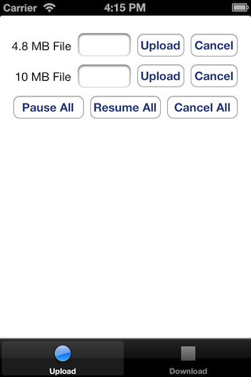
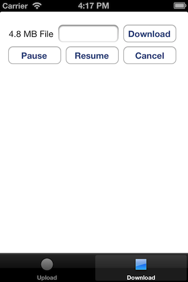

This article shows how to interact with Amazon S3 using some of the new pause and resume features of the S3TransferManager. The S3TransferManager is a layer of abstraction on top of the Amazon S3 APIs which automatically switches to resumable multipart uploads when file sizes exceed 5MB. This article has sample code for the iOS platform which demonstrates how you can incorporate pause and resume functionality into your app. The complete sample code and project files are hosted in GitHub which is linked at the end of this article.
To use the AWS SDK for iOS, you will need your AWS credentials, that is, your Access Key ID and Secret Access Key. If you haven't already signed up for Amazon Web Services (AWS), you will need to do that first to get your AWS credentials. You can sign up for AWS here.
There are several reasons you might want to pause uploads or downloads in a mobile app. One might be you only want to transfer files while you are on a wifi network, another is to enable the user to pause a transfer on demand. S3TransferManager simplifies the pause and resume process for you. It does not handle connection timeouts or drops aside from a configurable number of retries, but it will surface those errors so you can retry from within your app.
Below are some screenshots from the sample app. The upload screen allows you to upload 2 files, 1 which is <4.8 MB to exercise the standard upload functionality and 1 which is 10 MB to exercise the multipart upload functionality which allows you to resume. From the upload view you can pause, resume and cancel the uploads in progress. The download screen downloads the 4.8 MB file you uploaded via the upload screen and lets you pause, resume and cancel. 
Starting with S3TransferManagerUploadViewController.m
First you initialize your S3TransferManager by creating an S3 client with your credentials and endpoint. You also set the delegate to a class that implements the AmazonServiceDelegate interface. This allows you to react to callbacks when the transfer makes progress, completes or has an error. You should never embed your security credentials in your production apps. Review the link at the end of this article about Token Vending Machines for a more secure way of vending credentials to your app.
// Initialize the S3 Client.
AmazonS3Client *s3 = [[AmazonS3Client alloc] initWithAccessKey:ACCESS_KEY_ID
withSecretKey:SECRET_KEY];
s3.endpoint = [AmazonEndpoints s3Endpoint:US_WEST_2];
// Initialize the S3TransferManager
self.tm = [S3TransferManager new];
self.tm.s3 = s3;
self.tm.delegate = self;
Now you can use your S3TransferManager to upload a file
self.uploadSmallFileOperation = [self.tm uploadFile:self.pathForSmallFile bucket: [Constants transferManagerBucket] key: kKeyForSmallFile];
If you would like to pause an individual transfer you can do it like this
[self.tm pause: self.uploadSmallFileOperation];
Otherwise you use pauseAllTransfers to pause all uploads and downloads.
[self.tm pauseAllTransfers];
If you would like to cancel an individual transfer you can do it like this:
[self.uploadSmallFileOperation cancel];
Otherwise you use cancelAllTransfers to cancel all uploads and downloads.
[self.tm cancelAllTransfers];
Finally to resume a paused transfer on an individual file you do this. The handle to the paused
transfer is no longer valid on resume, so update it with the returned value.
self.uploadSmallFileOperation = [self.tm resume self.uploadSmallFileOperation];
Similarily to resume all uploads do this:
NSArray *ops = [self.tm resumeUploads:self];
// When you resume, the original handle to the S3TransferOperation
// is no longer valid. Obtain the new handles
for (S3TransferOperation *op in ops) {
if ([op.putRequest.key isEqualToString:kKeyForBigFile]) {
self.uploadBigFileOperation = op;
}else if ([op.putRequest.key isEqualToString:kKeyForSmallFile]) {
self.uploadSmallFileOperation = op;
}
}
Examples on how to react to callbacks from the AmazonServiceDelegate are also found in this sample. Here we react to didSendData to update the progress textbox.
-(void)request:(AmazonServiceRequest *)request didSendData:(long long) bytesWritten totalBytesWritten:(long long)totalBytesWritten totalBytesExpectedToWrite:(long long)totalBytesExpectedToWrite
{
if([((S3PutObjectRequest *)request).key isEqualToString:kKeyForSmallFile]){
double percent = ((double)totalBytesWritten/(double)totalBytesExpectedToWrite)*100;
self.putObjectTextField.text = [NSString stringWithFormat:@"%.2f%%", percent];
}
else if([((S3PutObjectRequest *)request).key isEqualToString:kKeyForBigFile]) {
double percent = ((double)totalBytesWritten/(double)totalBytesExpectedToWrite)*100;
self.multipartObjectTextField.text = [NSString stringWithFormat:@"%.2f%%", percent];
}
}
Moving on to S3TransferManagerDownloadViewController.m After similar logic to initialize a S3TransferManager object, you can initiate a download like this:
NSString *filepath = [NSTemporaryDirectory() stringByAppendingPathComponent:@"download-tm-small-file.txt"];
self.downloadFileOperation = [self.tm downloadFile:filepath bucket:[Constants transferManagerBucket] key:kKeyForSmallFile];
Now if you would like to pause, you can do:
[self.tm pause: self.downloadFileOperation];
Or you can pauseAllTransfers
[self.tm pauseAllTransfers];
To cancel, you can do:
[self.tm cancel: self.downloadFileOperation];
Or you can cancelAllTransfers
[self.tm cancelAllTransfers];
Finally to resume a paused transfer on an individual file you do this. The handle to the paused
transfer is no longer valid on resume, so update it with the returned value.
self.downloadFileOperation = [self.tm resume:self.downloadFileOperation requestDelegate:self];
There are some important limitations to keep in mind while using the new features of the S3TransferManager
The sample app requires the iOS mobile SDK to run. The download link can be found here:
The sample app is packaged with the AWS SDK iOS samples available on GitHub. Read the README for instructions on how to run it.
For more information about using AWS credentials with mobile applications see the following article:
Please feel free to ask questions or make comments in the Mobile Development Forum.